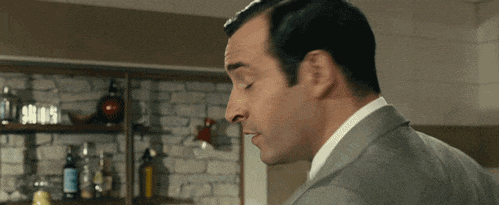

<mat-toolbar class="mat-elevation-z3">

  <button mat-button [matMenuTriggerFor]="belowMenuFacts" aria-label="Facts">
    <mat-icon>folder</mat-icon>
    Facts
    <mat-icon>arrow_drop_down</mat-icon>
  </button>
  <mat-menu #belowMenuFacts="matMenu" >
    <button mat-menu-item [routerLink]="['/facts']"><mat-icon>add_circle_outline</mat-icon>Facts Aléatoires</button>
    <button mat-menu-item [routerLink]="['/perso']"><mat-icon>search</mat-icon>Facts Personnalisées</button>
  </mat-menu>

  <button mat-button aria-label="Next" [routerLink]="['/memes']">
      <mat-icon>info</mat-icon>
      Meme Generator
  </button>

  <!--Titre-->
  <span class="example-spacer"></span>
  <h2>Application de Démonstration</h2>

  


</mat-toolbar>

